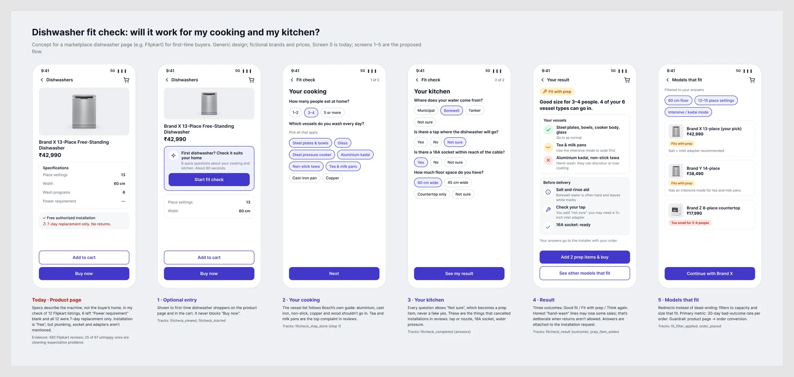

Add an optional 60-second fit check to a marketplace's dishwasher page for first-time buyers. It asks about their vessels and their kitchen, then says what will and won't clean well, what to prepare, and which models fit, and passes the answers to the installer.
I started with "will this dishwasher fit my kitchen?". The reviews didn't back that up: only a handful of 485 mention space or setup problems, and installers sort most of them out. What unhappy buyers actually complain about is that it doesn't clean their vessels: tea and milk pans, aluminium, pre-washing, hard-water marks. So I widened the question to "will a dishwasher work for my cooking and my kitchen?" and kept the parts of the first idea that held up.
First-time dishwasher buyers on a marketplace, in homes that cook Indian meals daily, often buying for parents.
Before buying, they can't tell whether it will work for their vessels and kitchen. They find out after delivery, from the brand's installer, on a listing that allows replacement only.
I collected 485 recent Flipkart reviews and tagged all 67 rated 1–3 stars, plus 11 positive reviews that mention doubts or setup.
| What unhappy buyers hit | Reviews (of 67) |
|---|---|
| Cleaning below expectations: tea and milk stains, pre-wash, hard-water marks, wrong vessels or capacity | 25 |
| Installer or service quality | 12 |
| Site not ready or installation delayed | 11 |
| Defects or breakdowns | 10 |
| Too vague to code | 14 |
A review can carry two tags, so the rows add up to 72 across 67 reviews.
Root cause: the product page describes the machine. The two things that decide whether it works, the buyer's vessels and water and their site (tap, 16A socket), are only checked by the installer after delivery.
| Option | Verdict |
|---|---|
| Fill in missing listing data | Needed, done alongside, but it can't know the buyer's vessels or kitchen |
| Video site survey before delivery | Later: costly per order and doesn't fix cleaning expectations |
| Longer return or trial window | Rejected: costly reverse logistics for a large appliance; treats the symptom |
| AI photo of vessels or kitchen | Later: rules are enough for version 1 |
| Fit check with prep checklist and installer handoff | Chosen |
| Do nothing | Rejected: replacement-only listings keep turning mismatches into 1-star reviews |

Rules only, no AI. The vessel and water rules follow Bosch's own guide: aluminium, cast iron, non-stick, copper and wood shouldn't go in, and above 370 ppm water hardness salt and rinse aid are needed.
Trade-off: an honest "your aluminium kadai won't go in" will lose some sales. When returns aren't allowed, a lost sale costs less than a stuck buyer and a 1-star review. A conversion guardrail keeps that loss in check.
First-time shoppers, split 50/50 on the product page. Primary metric: 30-day bad-outcome rate per order (site-not-ready cancellation, replacement, expectation complaint, or a 1–2 star review). Guardrails: product page to order conversion with a stop threshold, and fit-check abandonment.
About 2,900 orders per group to detect a fall from an assumed 8% to 6%, at 5% significance and 85% power. Base case: about 200 fewer bad outcomes per 10,000 orders.